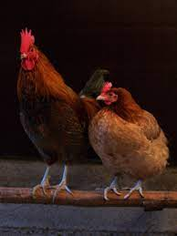
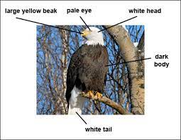
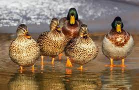

DOMESTIC FOWL(CHIKEN)
Description of chicken
A chicken is a bird. One of the features that differentiate it from most other birds is that it has a comb and two wattles
. The comb is the red appendage on the top of the head, and the wattles are the two appendages under the chin.
These are secondary sexual characteristics and are more prominent in the male.
Read More

Posted by Joshua on June 8
King Of Birds(EAGLE)
About Eagle
In general, an eagle is any bird of prey more powerful than a buteo.
An eagle may resemble a vulture in build and flight characteristics but has a fully
feathered (often crested) head and strong feet equipped with great curved talons.
A further difference is in foraging habits: eagles subsist mainly on live prey.
Read More

Posted by Joshua on June 15
DUCK
Description of duck
The stereotypical “duck” has a torpedo shaped body, rounded head, and a slightly flattened
and rounded bill. Some species are quite small, while others are larger, but they are smaller than
geese and swans. They also have relatively long necks, but again, shorter than geese and swans
Read More

Posted by Joshua on June 19